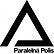

Informovaná spoločnosť, o.z.
je občianske združenie, ktorého cieľom je vzdelávanie, rozvoj a podpora
verejnosti v oblasti používania informačno-technologických aplikácií pre
zvýšenie životnej úrovne a zlepšenie kvality života. V súčasnosti je
činnosť združenia zameraná predovšetkým na technológiu blockchain a
proof-of-work kryptomeny, pre ktoré zabezpečuje prevádzku lokálnych
verejných uzlov. Taktiež realizuje workshopy a prednášky, ponúka služby
pre fyzické a právnické osoby s cieľom akceptovať kryptomeny ako
platidlo. Zároveň je aj zakladateľom projektu Paralelná Polis v
Košiciach, ktorá v súčasnosti už existuje v Prahe a Bratislave.
Uzly
Uzly


aktuálne prevádzkuje verejné uzly (public node) pre Litecoin, Bitcoin a
Monero, ktoré je možné bezplatne používať pre súkromné ale i
podnikateľské účely.
Kontakt
Informovaná spoločnosť, občianske združenie, Letná 40, Košice - Staré
mesto, 040 01
IČO : 508 259 50, DIČ : 21 20 54 51 30, IBAN : SK69 0200 0000 0038 2737
4653
e-mail : ispol@ispol.sk, mobil :
+421 917 369 977
Paralelná Polis

Po vzore Paralelnej Polis v Prahe a v Bratislave, sme začali spoločne
vyvíjať aktivity smerujúce k uskutočneniu obdobného projektu aj v
metropole východu - v Košiciach. Paralelná Polis sú predovšetkým ľudia,
ktorým záleží na slobode, umení a kultúre a zaujímajú sa aj o Bitcoin,
prípadne vytvárajú paralely k existujúcim riešeniam bežných
spoločenských problémov. Zjednodušene by bolo možné interpretovať Polis
ako ostrov slobody, na ktorom vedia jeho obyvatelia existovať paralelne
a nezávisle od štátu.